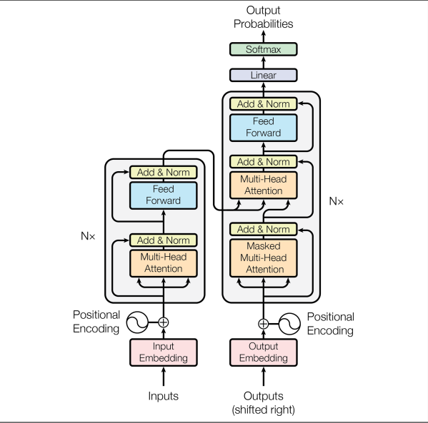

Meaning often depends on what came before. The history of sequence models is a practical attempt to retain that context without giving up reliable training or parallel hardware.
01 — Why memory
Order carries meaning.
In language, music, speech, DNA, and time series, an individual observation is rarely enough. Early recurrent neural networks offered a running state: process one token, update memory, carry it forward. That was a useful idea, but long chains made gradients fade or explode.
The initial limitation: the model had a state, but no reliable way to decide what should persist and what should be replaced.
02 — Gated memory
LSTMs made remembering a decision.
Long Short-Term Memory networks introduced gates that regulate information flow. Rather than blindly overwriting one state, a model can forget, write, and expose information selectively. GRUs later simplified this idea. Both made longer dependencies more tractable, but they still processed a sequence step by step.
Carry
Reuse a state at every step, but struggle to retain it over distance.
Gate
Control memory updates so useful signals survive longer.
03 — Attention
Stop waiting in line.
Transformers let each token compare itself with the rest of the sequence through queries, keys, and values. Instead of carrying all context through one recurrent chain, attention provides direct, weighted access to relevant tokens. Crucially, many of those comparisons can be computed in parallel on modern hardware.

04 — The trade-off
Every fix opens another frontier.
Attention improved parallelism and long-range access, but its pairwise comparisons are expensive for large contexts. Architecture work is not a march toward one final model. It is the continual choice of which constraint matters most for the task in front of you.
The complete deck includes the RNN and LSTM mechanics, scaled dot-product attention, and the limits still left to solve.
Open PDF